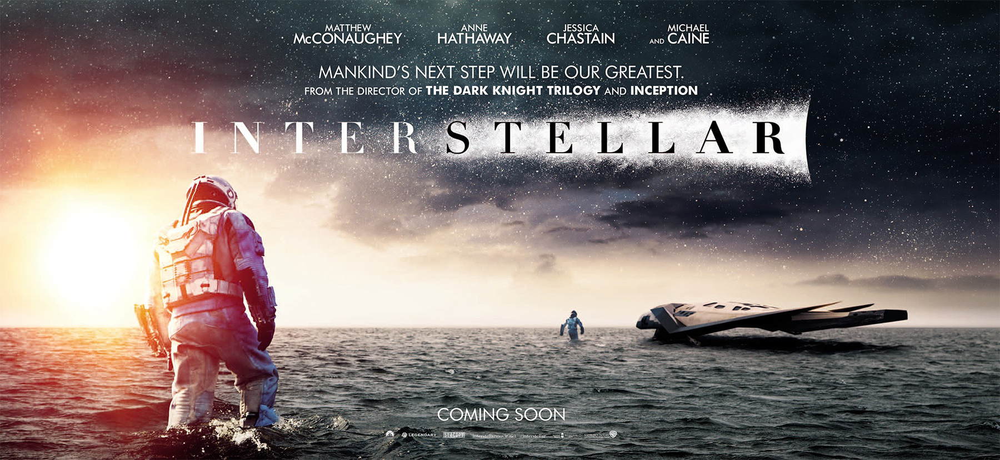

HOME
In Earth's future, a global crop blight and second Dust Bowl are slowly rendering the planet uninhabitable. Professor Brand (Michael Caine), a brilliant NASA physicist, is working on plans to save mankind by transporting Earth's population to a new home via a wormhole. But first, Brand must send former NASA pilot Cooper (Matthew McConaughey) and a team of researchers through the wormhole and across the galaxy to find out which of three planets could be mankind's new home.
